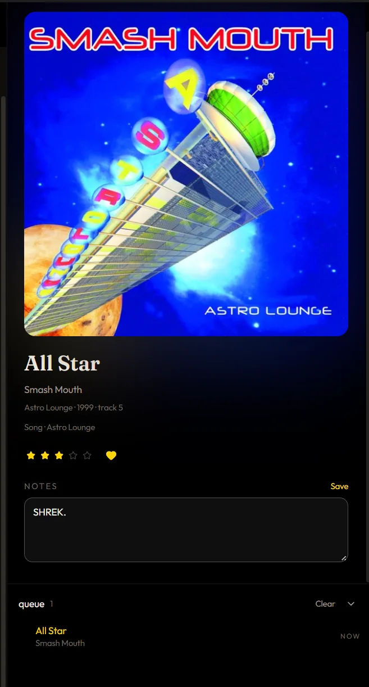

Stop Renting Your Music: The Case for Owning It Again
Build Your Hearth
When Spotify launched in 2008, it felt like magic. The music industry was still reeling from the Napster and LimeWire years, and buying songs one at a time on iTunes was the main legal way to listen. Then suddenly, for one monthly price, you could play almost any song ever recorded, anytime, on any device. Piracy dropped, the industry started growing again, and streaming became how most of the world listens.
But something changed along the way. We stopped owning music and started renting it. Albums turned into playlists, playlists turned into algorithms, and artists got paid fractions of a cent per play. Our libraries became something we borrow, gone the moment we stop paying or a song gets pulled.
And songs do get pulled. In 2025, King Gizzard & the Lizard Wizard removed their entire catalog from Spotify, including 27 studio albums (you read that right, they stay busy) and a long list of live records. Deerhoof, Xiu Xiu, Hotline TNT, and others left in the same wave, each protesting where Spotify's CEO was investing his money. Godspeed You! Black Emperor went further and pulled almost all of their music from Spotify, Apple Music, Amazon, and TIDAL, leaving Bandcamp as the main place to get it. In 2022, Neil Young and Joni Mitchell pulled their catalogs from Spotify over a dispute with the platform, and their music stayed off for about two years. If those albums were in your playlists, they were just gone one day. If you'd bought them, they'd still be in your library.
I've paid for music streaming every month for years. When I finally looked at what I actually play, it was almost all the same artists I've loved for a decade. I wasn't discovering anything. I was paying rent on songs I already knew by heart.
So I ran the numbers.
What streaming costs
In the US, Spotify Premium is $12.99 a month. Apple Music, YouTube Music, TIDAL, and Deezer are $11.99, and Qobuz is $12.99. That doesn't sound like much until you add it up. One year of Spotify is $155.88, and ten years is $1,558.80. At the end of those ten years you own nothing. Stop paying and the library disappears.
And the price only goes one way. Spotify launched in the US at $9.99 a month in 2011 and held that price for 12 years. Then it went up to $10.99 in 2023, $11.99 in 2024, and $12.99 in 2026. That's three increases in about two and a half years, roughly 30% more than where it started. When you rent, the landlord sets the rent. An album you bought costs the same forever.
What owning costs
A digital album usually costs about $10. $9.99 is still the most common price on iTunes, Amazon is often a little under that, and on Bandcamp many artists sell albums for around $9. That means one year of Spotify buys about 13 to 15 albums you keep forever.
I wanted to know what that looks like for me, so I took my 36 favorite artists and counted their albums from the last ten years using my own notes. They released 79 albums, about 8 a year. Buying every single one would cost roughly $790 to $1,030 over a decade. That's every new album from every artist I love, still hundreds of dollars cheaper than streaming, and I'd own all of it.
Where the money goes
Streaming pays a fraction of a cent per play, and that money usually goes to the label before the artist sees their share. A single album purchase can be worth more to an artist than a thousand streams. On Bandcamp, the artist or label keeps about 82% of each sale on average. For indie and mid-size artists, buying the album is one of the most direct ways to keep them making music.
But how do I find new music?
Owning your music doesn't mean you stop discovering it. Friends still send songs. Artists post clips, live sessions, and new singles on social media every day. Spotify and YouTube Music both have free tiers with ads, which are fine for sampling something new. Radio, music blogs, and Bandcamp's own recommendations are still out there too.
The difference is what happens next. When a song or an artist sticks with you, you buy it. Discovery stays free, and your money goes to the music you actually love instead of a monthly bill for everything you don't.
Why not just buy an old iPod?
Nostalgia is real. I get it. But Apple stopped making iPods in 2022, and a working iPod Classic now sells used for around $159, more than a year of Spotify, before you've bought a single song. They often need new batteries or drive swaps, and you still have to sync them through iTunes. The idea is right. The hardware is just getting old.
Music can be social again
There are mountains of used CDs out there, many for a few dollars, and you can rip them to lossless files in minutes. You can trade with friends, dig through bins at a record store, and hand someone an album that changed your life. That's how most of us found music before an algorithm decided what we'd hear next. Owning your music brings back the niches, the swaps, and the conversations that streaming flattened into a feed.
Why I'm building hearth
That's why I'm building hearth, a music player for people who own their music. It has no ads, no feed, and no followers. The only online features are the ones that need it, podcasts and radio. It's quiet, it's yours, and it plays the library you've built instead of renting one back to you.

My favorite feature is notes. While a song or a podcast episode is playing, you can jot down a thought, and hearth saves it with a timestamp. Click that timestamp later and it jumps right back to that moment. It's like writing in the margins of a book, but for music. A lyric that hit you, a riff you want to learn, a podcast point you want to remember. Over time, your library turns into a journal of what the music meant to you.

You can rate songs and heart your favorites, so your best-loved tracks are always easy to find. History shows everything you've played. Podcasts and radio live right alongside your music, so one app covers everything you listen to.
And then there's afterglow, hearth's listening recap. You don't have to wait for a December reveal to find out what you've been into. Open it anytime to see your top artists, albums, and songs, and how much you've been listening, whether that's this week, this month, or this year. It's all built from your own library on your own computer, so nothing gets sent anywhere and nobody's using it to sell you anything. It's just a warm look back at what's been keeping you company.
Where hearth is now
Right now I'm testing hearth every day on my own PC with my own library, the same albums I've been talking about this whole time. I'm living with it, finding what feels off, and fixing it until it feels like home. Soon I'll be opening it up to other people to try on their own computers, Windows and Mac. An iPhone version is coming too, so your library can go wherever you go.
Streaming still makes sense if you're always discovering new artists. But if you're like me and keep coming back to the albums you love, it might be time to stop renting them.
Buy the album. Trade the CD. Own your music.
Build your hearth.
Sources
- Spotify Newsroom, "Adjusting Our Spotify Premium Prices", July 2023
- Spotify Newsroom, "Adjusting Spotify Premium Prices in the US", June 2024
- SoundGuys, "Spotify confirms subscription price hike for US users"
- Rolling Stone, "Artists Who've Left Spotify Over CEO Daniel Ek's Military Tech Ties"
- NPR, "Why do musicians keep leaving Spotify?", Sept. 2025
- Pitchfork, "Godspeed You! Black Emperor Remove Music From Streaming Services"
- The New York Times, on Neil Young returning to Spotify, March 2024
- Billboard, "Joni Mitchell's Catalog Back on Spotify After Neil Young's Return"
- Bandcamp, About Bandcamp
- Apple Newsroom, "The music lives on", May 2022
- FlipTip, "What iPods Actually Sold For on eBay (2026)"
- iTopChart, iTunes Charts Worldwide
- Pricing pages: Spotify Premium, Apple Music, YouTube Music, TIDAL, Deezer, Qobuz